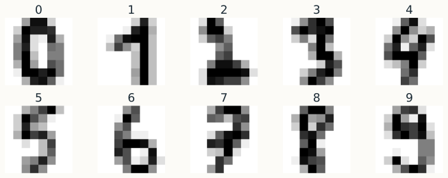
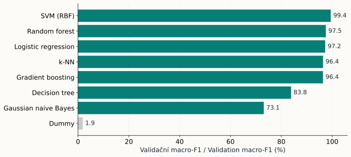
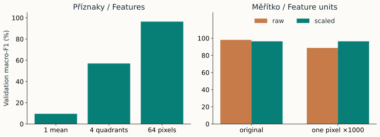
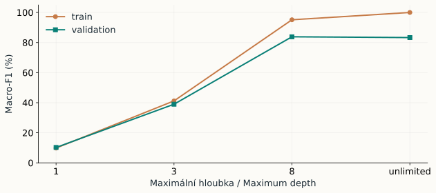
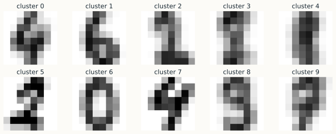
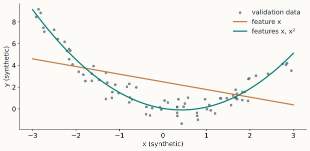

Volba metody pro rozpoznáváníChoosing a recognition method
Devět algoritmů a jeden kontrolovaný experiment.Nine algorithms and one controlled experiment.
Osm úvodních slidů a 90 minut praktické práce.Eight introductory slides and a 90-minute practical session.

Devět metod, různé úlohyNine methods, different tasks
| MetodaMethod | Úloha zdeTask here | PrincipIdea |
|---|---|---|
| Linear regression | regreseregression | Přímka v příznacích, predikce číselné hodnotyA linear combination of features predicts a number |
| Logistic regression | klasifikaceclassification | Lineární skóre a model pravděpodobností třídLinear scores and a model of class probabilities |
| Decision tree | klasifikaceclassification | Posloupnost dělení, zde hloubka 8A sequence of splits, depth 8 here |
| Random forest | klasifikaceclassification | Průměrování randomizovaných stromůAn average of randomized trees |
| SVM (SVC) | klasifikaceclassification | Hranice s marginem, zde RBF kernelA margin-based boundary, using an RBF kernel here |
| k-NN | klasifikaceclassification | Hlasování tří nejbližších trénovacích vzorůA vote of the three nearest training examples |
| k-means | shlukováníclustering | Deset shluků, počet K dodávámeTen clusters, with K supplied as an input |
| Gaussian naive Bayes | klasifikaceclassification | Model hustot s podmíněnou nezávislostí příznakůDensity models with conditional feature independence |
| Gradient boosting | klasifikaceclassification | Postupně přidáváme malé stromy podle ztrátySmall trees added sequentially using a loss function |
Role v tabulce odpovídá zvolené variantě. Například k-NN a stromy mají i regresní varianty.The table describes the chosen variants. For example, k-NN and trees also have regression variants.
Trénink, validace a testTraining, validation and test
| ČástSubset | PočetCount | PoužitíPurpose |
|---|---|---|
| Train | 1077 | Učení parametrů i scaleruFit parameters and scalers |
| Validation | 360 | Volba metody, příznaků a nastaveníChoose method, features and settings |
| Test | 360 | Závěrečné posouzení předem vybrané variantyFinal evaluation of a previously selected configuration |
Dělení je po obrázcích. V tomto příkladu neověřujeme zobecnění na nové pisatele.The split is image-based. This example does not test generalization to new writers.
Porovnání klasifikátorůComparing classifiers

Které chyby se skrývají za jedním číslem? Prohlédněte matici záměn.Which errors does a single score hide? Inspect the confusion matrix.
Příznaky a měřítkoFeatures and feature units

Jeden průměr ztratí uspořádání pixelů. Škálování mění vzdálenosti, podle kterých hledáme sousedy.A single mean loses pixel layout. Scaling changes the distances used to find neighbours.
Kapacita stromu a soubory modelůTree capacity and ensembles

Random forest: randomizované stromy a průměrování. Gradient boosting: postupné přidávání modelů podle ztráty.Random forest: randomized trees and averaging. Gradient boosting: sequential additions guided by the loss.
Pro klasifikační log-loss používáme záporný gradient. Obyčejná rezidua y − ŷ odpovídají speciálnímu případu kvadratické regrese.Classification with log-loss uses the negative gradient. Ordinary residuals y − ŷ describe the special case of squared-error regression.
Shluky a třídyClusters and classes

ARI na validaci: 0.490. Po přejmenování shluků: 0.490.Validation ARI: 0.490. After renaming clusters: 0.490.
Číslo shluku nemá samo o sobě význam číslice.A cluster ID does not by itself denote a digit.
Regrese a samostatný experimentRegression and an independent experiment

Přidání x² umožní popsat zakřivení. Regresi hodnotíme pomocí MAE a RMSE.Adding x² represents curvature. We evaluate regression with MAE and RMSE.
V závěru si zvolíte jednu klasifikační variantu podle validace a popíšete její chyby. Test otevřete až po této volbě.At the end, choose one classification configuration using validation and explain its errors. Open the test only after choosing.
Závěrečné zadáníFinal assignment